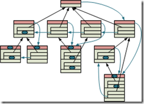
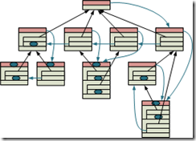
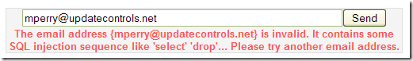
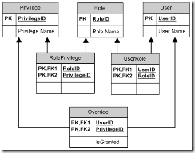
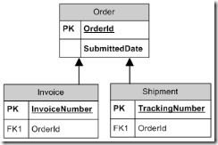

|
|
Archive for the ‘Databases’ Category
Monday, November 1st, 2010
The Windows Phone 7 development platform shipped with no built-in database. This is a surprising departure from Windows CE and Windows Mobile, both of which had on-device database support. Several open-source relational database projects are currently porting their codebases. But perhaps this is a good time to reevaluate the needs of the platform. Do you really want a relational database on a phone?
Correspondence is a non-relational database for occasionally-connected clients. The new build of Correspondence has project templates for Windows Phone 7. It is a natural fit for the platform. After all, what client is more occasionally-connected than a phone?
What can you do with a non-relational database?
Relational databases are optimized for ad-hoc queries, such as those required for data analysis and business intelligence. Relational databases are fantastic at reporting, and very efficient at processing large numbers of records. Your typical phone application requires none of these things.
There are several flavors of non-relational database (document, associative array, network, etc.) Each offers different sets of features. In general, however, non-relational databases are good at:
- Quickly locating related entities.
- Representing hierarchical data.
- Searching or sorting by application-defined attributes.
- Mapping to object-oriented code.
These are typically the features most desired by mobile application developers.
Where does Correspondence fit in?
Correspondence is a historical database. It is closely related to a network database, but with one significant difference: all entities are immutable. This is how historical databases gain their uncanny ability to synchronize.
Both historical and network databases directly connect entities with their neighbors. A phone application requires quick access to related entities. Starting at one point, the user of the application selects items to drill through a network of objects. They want the application to start up quickly, and they want the phone to be responsive. These phones generally do not have powerful processors or a great deal of memory. So a database that links entities directly to one another rather than indexing them is a win in this situation.
But historical and network databases differ in that network databases allow entities to change over time. This is the way we typically think about object-oriented systems. But historical databases do not allow entities to change. The only way to alter an entity is to append another that changes its meaning. The entity itself is immutable.
The reason for modeling data historically is to support synchronization. Things that change are hard to synchronize. Things that don’t are easy. A phone is only a small part of a person’s life. If their data was only on the device, it would be of limited value. A database that is optimized for synchronizing with the desktop and the Web is much more compelling.
How do you model changing data with immutable entities?
Consider a chess board. During the course of the game, the board position changes dramatically. We could model a chess game in an object-oriented system as an 8-by-8 grid of squares whose values change over time.
But the chess game is actually a sequence of discrete moves. Once a move is made, it cannot be changed. By observing that history of moves, we can determine the current position of the board. In fact, we can reconstruct the board position at any point in time. The mutable chess board is modeled with a sequence of immutable moves.
An application based on a historical database works the same way. Rather than capturing the current state of the system, the database captures all of the decisions that led to that state. These decisions have been made in the past, and are now considered historical facts. By querying related facts, the application can quickly determine the state of the system.
Take a contact manager application, for example. Add a person with the name “Mike”. You will have a Person fact and a Name fact.

Now let’s change the name. We do that by introducing a new Name fact. This one not only references the Person, but also the prior name.

We don’t have to replay all of the historical facts to determine the current name of a contact. We can quickly query a Person for the related Name that has not been replaced. In the modeling language of Correspondence, the query looks like this:
fact Person {
unique;
Name* currentNames {
Name n : n.person = this
where n.isCurrent
}
}
fact Name {
Person person;
Name* prior;
string value;
bool isCurrent {
not exists Name next : next.prior = this
}
}
The currentNames query appears as a collection in code. You can make it look like a mutable property like this:
public partial class Person {
string Name
{
get
{
return CurrentNames
.Select(name => name.Value)
.FirstOrDefault();
}
set
{
Community.AddFact(new Name(this, CurrentNames, value));
}
}
}
The getter pulls the value of the Name matching the query. The setter creates a new name. It passes CurrentNames to the new fact as the value of “prior”, thus ensuring that it replaces the current value.
What next?
Please download the latest build of Correspondence from CodePlex. On that site, you will also find some walkthroughs that take you through building your first Correspondence application in WPF. Once you are comfortable thinking historically, try it on Windows Phone 7. You can find more patterns like the one above on Historical Modeling.
Posted in Correspondence, Databases | No Comments »
Friday, October 1st, 2010
In developing Correspondence for the Windows Phone 7, I’ve uncovered a need for a new data structure. I’m calling this data structure a Historical Tree, since it is designed specifically for historical modeling.
Correspondence allows for interchangeable storage strategies. The storage strategies currently implemented are:
- SSCE (.NET)
- SQL Server (.NET)
- SQL Azure (.NET)
- Postgres (Java)
- Memory (both)
Most of these are built on a relational database, with the obvious exception of the memory storage strategy. Memory storage was originally intended for unit testing, but can sometimes be useful for small clients. It is not optimized for large data sets.
Windows Phone 7 does not have an out-of-the-box relational database. The storage strategy that you see in the videos is a modified memory strategy. It loads all of the facts from isolated storage into memory on startup. This is incredibly inefficient, and not the way that I’m going to ship. Instead, I’m going to rewrite the isolated storage storage strategy to use a historical tree.
Operations
The operations that a Correspondence storage strategy must support are:
- Insert a fact having data and references to predecessors.
- Given a fact reference, load its data and predecessor references.
- Given a hash code, load a fact reference.
- Given a predecessor reference, find all successor references.
Update and delete are not valid operations on a Correspondence store. When a fact is created, all of its predecessors are known. Successors are all of the facts that reference a predecessor.
Append only
  This set of operations suggests an append-only data structure.  This set of operations suggests an append-only data structure.
You can add new facts to the end of the structure, but you cannot insert or remove them from the middle. Furthermore, all predecessor references are fixed and known at the time of insert. These will necessarily be references to facts earlier in the structure.
The only part of the data structure that changes is the list of successors. When a new fact is appended, it has to insert itself into the lists of each of its predecessors. To support this, a fact will participate in one linked list per predecessor.
Each fact has a pointer to the head of its linked list of successors. This is the fact most recently appended that references this fact as a predecessor.
Then, for each predecessor, the fact identifies the role that the predecessor plays, the reference to the predecessor, and the reference to the next successor of that predecessor. To traverse the list of successors, first follow the head. Then find the matching predecessor reference and follow its next pointer. This will visit successors from most recent to least recent.
Finally, the fact has a payload of data. This includes the type, the version, and values of all fields. The data appears last because it is not used while traversing the tree.
The only field of a record that can change is the head pointer (highlighted in red). All other fields are immutable. To protect against corruption, the head is redundant. Each record holds two pointers and an A/B switch. The switch determines which of the two pointers is active. During modification, the new pointer is written to the inactive area, and then the switch is flipped.
Insertion
To insert into this structure, a new record is appended to the file. Initially, the head pointer is null. The next pointers are copies of the head pointers of each predecessor.
Then for each predecessor, the new record’s position is stored as their head. This operation is done using the A/B switch so that the new pointer does not overwrite the active one.
If a fact references the same predecessor twice (possibly in two different roles), then both of the next pointers contain a copy of the previous head. Traversal will follow only the first of them, so the successor will appear only once in the linked list.
Traversal
References to all predecessors are immediately available from any record. References to successors, on the other hand, follow the linked list from the head.
When following the linked list, the predecessor sub-records are scanned for the one matching the desired fact. The next pointer of the first match is followed. If that pointer is null, then traversal is complete.
Hash code
The historical tree supports all but one required operation: hash code to fact reference. This operation is instead supported by a parallel index data structure. A red-black tree seems the best fit for this operation.
When a fact is inserted, its hash code is calculated. That hash code is inserted into a red-black tree, with a reference back to the fact’s position in the historical tree.
Facts are written to the historical tree before being added to the red-black index tree. If the index becomes corrupted, then in the worst case it can be rebuilt from the historical tree. In the best case, the corruption can be repaired by re-adding facts from the end of the historical tree.
Complexity
The complexity of an insert or traversal is not affected by the total size of the data set. Insertion complexity is proportional to the number of predecessors, which is fixed and based on the design of the model. Traversal of predecessors is similarly proportional to the number of predecessors. A well-designed model will limit the number of predecessors.
Traversal of successors is proportional to the number of successors times the average number of predecessors that each predecessor has. It requires walking a linked list, which is O(n). But at each node, the list of predecessors is scanned to find the next pointer. Because of this, we multiply the average number of predecessors. Based on the design of the model, this number is assumed to be limited.
Insertion and traversal of the index is O(log(n)), where n is the number of facts in the store. Indexing becomes slower over time, but not rapidly so. Still, it is recommended that the store be turned over periodically, both to keep the index performant and to release resources on the device.
Turning over the store
Correspondence supports the idea of turning over a fact store. Two stores are kept at any time. One is read-only and the other is read-write. The read-write store collects new facts, and takes a copy of all relevant facts. The read-only store is frozen. It is consulted during queries, and its results merged with the results from the read-write store.
Over time, all of the relevant facts are copied to the read-write store, and the read-only store provides no additional value. After this point, the read-only store is archived and the read-write store becomes read-only. A new empty read-write store is created.
On a mobile device, the old store is destroyed rather than archived. All of its facts have been pushed to a server. It is assumed that any facts that the user still cares about were already copied to the next store.
I am currently working on push notifications to the phone. But when that is finished, I will implement historical trees in isolated storage. This data structure is specifically designed for Correspondence, so I expect it to perform extremely well. In fact, I’m considering porting it back to the desktop as an alternative to SSCE.
Historical tree example.png
Posted in Databases, Historic Modeling | No Comments »
Thursday, March 25th, 2010
It’s always best to develop against realistic data. No data is more realistic than production data. If you can legally and ethically import production data to development, you should definitely do so.
We’re developing a new rebate program for pharmaceuticals. Rather than creating a dummy product catalog, we would rather import the actual catalog from production.
The problem is the auto-incrementing IDs. We’re not just pulling in a flat structure; we’re maintaining relationships in a tree structure. When we insert rows into the dev database, these rows get different IDs than the production rows. As a result, the foreign key relationships get broken.
One solution to this problem is to drop all of the data and do an identity insert. Temporarily turn off the auto-incrementing behavior of the primary key so that you can specify exactly what it should be. This brings all of the production IDs into dev, so the foreign key relationships still line up.
The problem with that solution is that you have to drop all of the existing dev data in order to import. We have other structures that are loosely related to the product catalog. Dropping the product catalog would require us to drop some of the tables used by these other systems. All of the test data we loaded for those systems would be lost.
Here’s my solution
Instead of enforcing that the development IDs are equal to the production IDs, we can instead record a map. By joining to this map, we can insert the development IDs into foreign key columns, preserving the relationships from production. Here’s how we do it.
Step 1: Restore a backup of production data into a new database on the development server. You might also use replication for this, if you already have a subscription. Be sure that you get only the subset that you are legally and ethically permitted to use. In our case, the product catalog is what we need, but we do not restore any tables containing patient information.
Step 2: Identify the natural key. The ID that you are mapping is the surrogate key. The natural key is the set of columns that tell you that this is conceptually the same row. In our case, we are using the drug class name and the product group name.
Step 3: Copy rows that do not already exist based on the natural key. Use INSERT … SELECT … WHERE NOT EXISTS for this operation. For example:
INSERT INTO [Dev].dbo.[DrugClass]
([Name])
SELECT [Name]
FROM [Prod].dbo.[DrugClass] s
WHERE NOT EXISTS (SELECT * FROM [Dev].dbo.[DrugClass] t WHERE t.Name = s.Name)
GO
Step 4: Create a temp table to map surrogate keys. Populate this table by joining the natural keys.
DROP TABLE #DrugClassMap
GO
SELECT s.DrugClassId as SourceDrugClassId, t.DrugClassId as TargetDrugClassId
INTO #DrugClassMap
FROM [Prod].dbo.[DrugClass] s
JOIN [Dev].dbo.[DrugClass] t ON s.Name = t.Name
GO
Step 5: Use the temp table to import related tables. Join to the source table by source ID, and insert by target ID.
INSERT INTO [Dev].dbo.[ProductGroup]
([DrugClassId]
,[Name])
SELECT m.[TargetDrugClassId]
,s.[Name]
FROM [Prod].dbo.[ProductGroup] s
JOIN #DrugClassMap m ON m.SourceDrugClassId = s.DrugClassId
WHERE NOT EXISTS (SELECT * FROM [Dev].dbo.[ProductGroup] t WHERE t.Name = s.Name AND t.DrugClassId = m.TargetDrugClassId)
GO
Now you can run the script anytime you need to import data. You won’t destroy existing data in the process.
Posted in Databases | No Comments »
Wednesday, September 30th, 2009
To play along at home, please download the script for SQL Server 2005. It may work on earlier versions, but I haven't tried it.
Yesterday I said that the data is the queue. It is a mistake to separate the processing of data from the data itself. I proposed an architecture in which there is no workflow orchestration, there are only autonomous worker processes. These processes pick up work based on attributes of the objects on which they act, not based on any external queue.
There are a small number of database patterns that make this possible. One that I often use is Table as Queue.
Setup a test environment
I created a test database called "Queues" to test this pattern. You can find the script attached. As it is now, this script is incorrect. We will correct it as we go along.
The database has two tables. The Order table holds orders that we want to process. If the order hasn't been processed, it has no confirmation number. If it has, it does. The Log table holds a log of all the steps the order processor has gone through. This will help us see how well we are doing.
There are three stored procedures that we'll use. The InsertLoop stored procedure generates some test data. Run this one first. The ProcessLoop stored procedure simulates the ERP process. You'll want to open two query windows and enter "EXEC ProcessLoop" in both of them. Finally, the ViewLog procedure lets us see how we did.
Anatomy of a queue procedure
The ProcessLoop stored procedure begins by selecting one order to process. It returns only the ID of this order.
-- Get a work item
SET @orderId =
(SELECT TOP 1
OrderId
FROM [Order]
WHERE ConfirmationNumber IS NULL)
This ID has to be the primary key of the table. This is necessary for correct queuing behavior. If it is not the primary key, we will not get the correct locks later.
To process the order, other details about that record will be required. These should be fetched separately by the returned ID. Do not try to combine these steps.
Default isolation level
Right now, the ProcessLoop stored procedure uses the default transaction isolation level (read committed). It starts a transaction, gets an order from the queue, processes it, and updates the confirmation number.
Hit F5 on both of your ProcessLoop query windows. While this is running, run ViewLog. You'll see something like this:
| OrderID |
Action |
SPID |
Date/Time |
| 89 |
Processing |
52 |
2009-09-29 12:51:18.163 |
| 89 |
Processing |
53 |
2009-09-29 12:51:18.337 |
| 89 |
Updating |
52 |
2009-09-29 12:51:19.163 |
| 89 |
Finished |
52 |
2009-09-29 12:51:19.163 |
| 89 |
Updating |
53 |
2009-09-29 12:51:19.337 |
| 89 |
Finished |
53 |
2009-09-29 12:51:19.337 |
| 90 |
Processing |
52 |
2009-09-29 12:51:19.663 |
| 90 |
Processing |
53 |
2009-09-29 12:51:19.837 |
| 90 |
Updating |
52 |
2009-09-29 12:51:20.663 |
| 90 |
Finished |
52 |
2009-09-29 12:51:20.663 |
| 90 |
Updating |
53 |
2009-09-29 12:51:20.837 |
| 90 |
Finished |
53 |
2009-09-29 12:51:20.837 |
Both of the SPIDs are processing all of the orders. This is clearly not what we want. We want only one SPID to process each order.
Higher isolation level
The other process is able to sneak in between the SELECT and the UPDATE and perform an UPDATE of its own. We want to ensure that the row that the process UPDATEs is the same version it SELECTed. The way to do this is to raise the isolation level to REPEATABLE READ. As the name implies, it ensures that two SELECTs within the same transaction will read the same data. What it also means is that an UPDATE in the same transaction will update the same version of the row. No intermediate UPDATEs will be allowed.
Make the following change to the ProcessLoop procedure:
SET TRANSACTION ISOLATION LEVEL REPEATABLE READ
Then start the two ProcessLoops again. Before long you will get the error "Transaction (Process ID 53) was deadlocked on lock resources with another process and has been chosen as the deadlock victim. Rerun the transaction." The other process will still be running.
Kill the remaining process. Close the window so that you can commit the transactions that got left open. Then open a new window and type "EXEC ProcessLoop" again to prepare for the next step.
If you look at the log, you'll see only one of the SPIDs represented. The logs from the other one were rolled back with its transaction.
What happened is that both SPIDs SELECTed the same record. The first one UPDATEd it, which prevented the second from doing so. When it tried to UPDATE, SQL recognized the deadlock and rolled it back.
Update lock
What we want to do is lock the record so that the first one to SELECT it is the one to process it. We'll do this by escalating our read lock to an update lock.
-- Get a work item
SET @orderId =
(SELECT TOP 1
OrderId
FROM [Order] WITH (UPDLOCK)
WHERE ConfirmationNumber IS NULL)
Now run the two processes and see what happens.
| OrderID |
Action |
SPID |
Date/Time |
| 138 |
Processing |
52 |
2009-09-29 14:05:26.173 |
| 138 |
Updating |
52 |
2009-09-29 14:05:27.173 |
| 138 |
Finished |
52 |
2009-09-29 14:05:27.173 |
| 139 |
Processing |
53 |
2009-09-29 14:05:27.173 |
| 139 |
Updating |
53 |
2009-09-29 14:05:28.173 |
| 139 |
Finished |
53 |
2009-09-29 14:05:28.173 |
| 140 |
Processing |
52 |
2009-09-29 14:05:28.173 |
| 140 |
Updating |
52 |
2009-09-29 14:05:29.173 |
| 140 |
Finished |
52 |
2009-09-29 14:05:29.377 |
At first glance this looks good. Each order is processed by just one SPID. But look closely at the times. The two processes are taking turns. Each one enters SELECT, but then waits for the other one to commit its transaction before SELECT returns.
Since we've requested an update lock, the higher transaction isolation level makes no difference. We can turn it back down to the default.
Read past
We want each process to skip over locked rows. We do this by specifying the READPAST query hint.
-- Get a work item
SET @orderId =
(SELECT TOP 1
OrderId
FROM [Order] WITH (UPDLOCK, READPAST)
WHERE ConfirmationNumber IS NULL)
With this hint in place, we get some good behavior.
| OrderID |
Action |
SPID |
Date/Time |
| 583 |
Processing |
53 |
2009-09-29 14:37:21.740 |
| 584 |
Processing |
52 |
2009-09-29 14:37:22.020 |
| 583 |
Updating |
53 |
2009-09-29 14:37:22.740 |
| 583 |
Finished |
53 |
2009-09-29 14:37:22.740 |
| 584 |
Updating |
52 |
2009-09-29 14:37:23.020 |
| 584 |
Finished |
52 |
2009-09-29 14:37:23.020 |
Now the two processes are running concurrently. Each order is handled by only one process. There are no deadlocks.
With this pattern, the data itself can be used as a queue. But you have to remember the details:
- SELECT TOP 1 just the primary key of the queue table.
- Use both the UPDLOCK and READPAST query hints on the SELECT.
- Fetch additional information by ID in a separate query.
- After operating on the data, update the record to exclude it from the original WHERE clause.
- Perform both the SELECT and the UPDATE within the same transaction.
Posted in Databases, Patterns | No Comments »
Thursday, May 28th, 2009
Here's a perfect example of the wrong way to defend against SQL injection attacks.
I am trying to obtain a license for NDepend for use in my open source project Update Controls. Their download form asks for an email address. So I provided the email address I use for that project. The form didn't like it:

XKCD warns us to "sanitize our database inputs". That is completely wrong. Honor the user's input, but treat it as text, not code.
Posted in Databases | 2 Comments »
Tuesday, May 26th, 2009
I just requested a change to a use case that will save the project two man-weeks.
eCommerce users and accounts
In the ABSG eCommerce system, a user shops on behalf of an account. Some users can shop on behalf of more than one account, so they get to choose at the beginning of their shopping experience. We populate their list of choices from all of the accounts to which they have access.
Employees of ABSG log on to the eCommerce system to help people. Some of these employees are sales representatives for certain accounts. Every account as one sales rep.
Not all users are employees, and not all employees are users. We enter an employee ID in the user profile to relate the two.
The UserAccount table
 We have an associative table that relates users with the accounts that they have access to. This is the table that we use to present the list of choices at the beginning of the user's shopping experience. We have an associative table that relates users with the accounts that they have access to. This is the table that we use to present the list of choices at the beginning of the user's shopping experience.
I'm sure at one point the BA asked me how a user is granted access to an account. I told her about the UserAccount table. It was probably that conversation that led to the Automatic Account Access use case.
Automatic account access
Use case 1019: Automatic Account Access stated that the system shall periodically check for changes:
- An account is created or deleted.
- A user is created or deleted.
- The sales representative for an account is changed to a different employee.
- The employee ID of a user is changed.
When one of these changes happens, it will:
- Identify the sales rep user for each affected account.
- If there is no existing UserAccount record for that sales rep, insert it.
- If there is an existing UserAccount record for a prior sales rep, delete it.
This to be accomplished via an impressive combination of replication, triggers, and cursors.
The problems
There are a number of problems with this approach.
- It would take a DBA a couple of weeks to build and test it.
- Testing cannot be easily automated.
- It has too many moving parts (a.k.a. degrees of freedom), each one of which would have to be monitored.
- It is difficult to determine whether a UserAccount record was created automatically or intentionally. We could either delete UserAccount records that a human created, or fail to delete UserAccount records that a program created.
- It does not take effect immediately. People could be diagnosing a failure of the system, only to learn that the process hasn't yet run.
These are all symptomatic problems. Each one could be addressed individually. But here are the two big systemic problems:
- The use case dictated a solution.
- The solution treated dependent behavior as independent behavior.
Here's my solution
Use case 1019 has been deleted, and replaced with a single business rule in use case 1020: User Account Selection. This rule reads "A user may select any account for which their employee ID matches the accounts sales representative employee ID." No mention of how this is accomplished. That solves one problem.
To solve the other, we simply change the query that fetches the list of accounts at the beginning of the shopping experience. Instead of just getting UserAccount records, we also include accounts where account.SalesRepEmployeeID = user.EmployeeID. One small change to a query, instead of a rats nest of triggers.
The basic flaw in the Rube Goldberg reasoning that produced the original design was that it treated dependent behavior (which accounts the user could select) as independent behavior (UserAccount records). Changes to independent behavior (INSERTs, UPDATEs, and DELETEs) are permanent. Changes to dependent behavior (SELECTs) are not. It is therefore harder to code, test, monitor, and troubleshoot independent behavior. It is easier to do all of those things with dependent behavior.
Records are independent. Queries are dependent. Never use independent behavior when dependent behavior is sufficient.
Posted in Databases, dof | No Comments »
Friday, April 17th, 2009
It's a common scenario. You've defined an autoincrement primary key on a table. After you insert a row into this table, you need the ID. Maybe you need to insert related rows into a child table. Maybe you need to redirect the user to a page displaying the new data. It's easy to imagine reasons for needing this ID. In fact, it's hard to imagine not needing it.
Why, then, is it so hard to get it?
Well, now it's easy add this class to your project:
using System;
using System.Data;
namespace AdventuresInSoftware.Data
{
/// <summary>
/// Create a ConnectionScope inside of a using to open and close a
/// database connection. Also offers a convenient LastId method.
/// </summary>
public class ConnectionScope : IDisposable
{
private IDbConnection _connection;
/// <summary>
/// Wrap a database connection inside of a ConnectionScope in
/// a using statement.
/// </summary>
/// <param name="connection">The connection to open and close.</param>
public ConnectionScope(IDbConnection connection)
{
_connection = connection;
connection.Open();
}
/// <summary>
/// Get the autoincrement key generated by the last insert.
/// </summary>
/// <returns>The ID of the last row inserted.</returns>
public int LastId()
{
using (IDbCommand command = _connection.CreateCommand())
{
command.CommandText = "SELECT @@IDENTITY";
command.CommandType = CommandType.Text;
return (int)(decimal)command.ExecuteScalar();
}
}
/// <summary>
/// Closes the connection. Intended to be called automatically
/// by the using statement.
/// </summary>
public void Dispose()
{
_connection.Close();
}
}
}
Then write code like this:
public int SaveVendor(string vendorName)
{
VendorTableAdapter vendorTableAdapter = new VendorTableAdapter();
using (var scope = new ConnectionScope(vendorTableAdapter.Connection))
{
// Insert the vendor and return the new ID.
vendorTableAdapter.Insert(vendorName);
return scope.LastId();
}
}
As you can see, the above code uses a typed TableAdapter. This is a convenient class generated by ADO .NET to give you strongly typed objects and methods for accessing tables. TableAdapters have been largely obsoleted by ORMs and Entity Framework, but they are still handy for smaller client-side projects. This code is from a smart-client project built on SQL CE.
A typed TableAdapter has a method called Insert which returns an integer. Oh boy! It must be returning the ID of the new row! After all, what else could I possibly want out of an Insert?
No, sorry. Insert returns a row count. That's right. The Insert method, which inserts a row, returns a row count.
Let me say that again. This method who's only reason for existing is to insert one row returns the number of rows it inserted. Did you get that? It always returns the number 1! By design!
Inane, yes, I know. But there it is. Enjoy.
Posted in C#, Databases | No Comments »
Friday, April 3rd, 2009
It's a common refrain among the DBAs that I've worked with. We talk about a new feature, and they describe how it can be done in the database. They could write a stored procedure, a calculated column, a view, and a series of triggers to get exactly the behavior required. Their toolset is not limited to tables and indexes. They want to do more than just storage.
I respect that. I see what databases are capable of, and I want to take advantage of those capabilities where appropriate. On the other hand, I sympathize with arguments about separation of concerns. View logic is in the view, business logic is in the middle tier, and data access logic is in the database. Putting view logic or business logic into the data tier leads to trouble.
Calculating privileges
 The business has asked for a rich security model for our eCommerce system. They've identified several privileges that map to features of the site. They want an admin user to create roles containing those privileges. The admin user can then assign those roles to other users of the system.
Occasionally, there will be a one-off privilege that you want to explicitly grant or deny to a user. So after assigning a user some roles, the admin should be able to specify overrides. The ERD appears on the right.
The UI for managing roles and privileges is somewhat complex. The admin user searches for a user, and is presented with a list of roles. The admin clicks checkboxes next to the roles to assign them to the user.
Then the admin can navigate to another page where they are presented with a list of privileges. A green icon indicates default privileges -- the privileges that are part of a role to which the user is assigned. A checkbox indicates whether the user is granted that privilege. If there are no overrides, the green icons and the checkboxes agree. By checking and unchecking the privileges, the admin can create overrides.
In more formal notation, here is the dependent behavior that interprets the tables.
- user_in_role(User u, Role r) = there exists UserRole ur where ur.user = u and ur.role = r
- privilege_in_role(Privilege p, Role r) = there exists RolePrivilege rp where rp.privilege = p and rp.role = r
- is_default_privilege(User u, Privilege p) = there exists Role r such that user_in_role(u, r) and privilege_in_role(p, r)
- user_has_privilege(User u, Privilege p) =
there exists Override o such that o.user = u and o.privilege = p -> o.isGranted
else -> is_default_privilege(u, p)
The green icon reflects is_default_privilege, and the checkbox reflects user_has_privilege.
Calculating privileges in a view
The DBA, upon seeing these requirements, designed a view that calculates privileges for a user. Each row is a privilege. One bit column indicates whether the privilege is a default for the user, and another indicates whether the privilege is granted to the user. Looking at the formal notation, you can see that SQL is a natural language in which to describe this behavior.
But what happens when the user checks a checkbox? We want to either create or delete an Override. If the application code consumes the view, why should it need to also know about this logic?
The DBA also took care of this. He created an INSTEAD-OF UPDATE trigger on the view. When user_has_privilege is updated, an Override is either created or deleted. Now all of the logic for interpreting this table structure is encapsulated in a view. The view is the contract with the database.
Appropriate for our architecture?
This solution would be appropriate for a two-tier application. The page could bind directly to the view. But we have chosen a three-tier architecture. Between the page and the database is application logic. This approach is less desirable when a middle-tier is available.
The view combines all of the information into one result set, which takes away the ability for the application tier to cache privileges. Privileges do not change, unless we deploy a new version of the code. So caching them indefinitely is appropriate. The combined result set is bigger than the source data that could change, so it is less efficient.
The view is not a complete contract. The application still needs the ability to create and delete roles as individual entities. While this view encapsulates some of the business logic, it cannot encapsulate all of it. It is a leaky abstraction.
What is your opinion? Is this a data access contract? Is it business logic? Or is it perhaps UI logic? Which tier should handle this behavior?
Posted in Contracts, Databases | No Comments »
Thursday, March 19th, 2009
State transition diagrams have their place. They are useful for interpreting limited sets of well-defined inputs: for example parsing text, recognizing mouse gestures, or negotiating network protocols. But state or status in the large is rigid, hard to synchronize, and information poor. History is much more useful.
Business objects tend to accrete status fields. In our eCommerce system, for example, we have a status on a shopping cart, a status on an order, and a status on a line item. Each status means something different. The word "status" means nothing without knowing what statuses are available and when they change.
 Status can sometimes refer to several independent degrees of freedom simultaneously. An order can be invoiced, and it can be shipped. One does not necessarily happen before the other. In order to capture information accurately, we need a Cartesian product of statuses: neither invoiced nor shipped (confirmed), invoiced but not shipped (invoiced), shipped but not invoiced (shipped), and both invoiced and shipped (completed). Add a third degree of freedom, and the product explodes into an unmanageable mess. Status can sometimes refer to several independent degrees of freedom simultaneously. An order can be invoiced, and it can be shipped. One does not necessarily happen before the other. In order to capture information accurately, we need a Cartesian product of statuses: neither invoiced nor shipped (confirmed), invoiced but not shipped (invoiced), shipped but not invoiced (shipped), and both invoiced and shipped (completed). Add a third degree of freedom, and the product explodes into an unmanageable mess.
Many status changes need to capture additional information. When an order is shipped, we need to store a tracking number. Since we have to capture this information anyway, we could just look at the tracking number field to see if it is populated, rather than checking the status. Keeping this information in two fields means that we have more degrees of freedom than the problem calls for, and therefore more validation and testing.
An alternative: historic modeling
Historic modeling is the practice of modeling object behavior based on its history, not its state. A historic modeling approach is to capture the historical events, and then determine the status. For example, invoicing an order is one event, and shipping is another. The status of the order is "confirmed" if neither of these events has been recorded, "completed" if both have, or "invoiced" or "shipped" if one exists but not the other.
Historical events carry information. The shipping event carries the tracking number, for example. This eliminates nullable fields by moving them away from the entity. And since the tracking number and shipped status cannot vary individually anymore, we have only the degrees of information that the problem demands.
The names of events tend to be much more informative than the word "status". Glancing at the data model, someone can see what events could happen with any given entity. If they only see the word "status", they don't have a clue.
Status is dependent upon history
 To model this system historically, we would create three tables: Order, Invoice, and Shipment. We allow only inserts into these tables. No updates. No deletes. (Yes, we allow data to be archived, but application logic never deletes information.)
We determine the status of an order based on predicates. The order is "submitted" if neither an Invoice nor a Shipment exists. It is "invoiced" if an Invoice exists but no Shipment. It is "Shipped" if a Shipment exists but no Invoice. And it is "completed" if both exist. This status can be encoded in a view for easy reporting.
Capturing this information historically, we can easily make sense of the model. It can only change in the ways we expect it to change. For example, in order to transition the order from "submitted" to "shipped", we have to enter a tracking number. The database can translate historic events into status. Status is dependent behavior, and history is independent.
Posted in Databases, Historic Modeling | No Comments »
Monday, March 16th, 2009
 I am tracking the status of an order in an eCommerce system. In the database, I have a table called OrderStatus that lists all of the statuses that an order can be in. Lookup table like this are useful for populating combo-boxes and running reports. And a foreign key constraint on the status column ensures the status of each order is within the set. I am tracking the status of an order in an eCommerce system. In the database, I have a table called OrderStatus that lists all of the statuses that an order can be in. Lookup table like this are useful for populating combo-boxes and running reports. And a foreign key constraint on the status column ensures the status of each order is within the set.
But within code, the lookup table is not necessary. I created an enumeration for the status values. The IDs were well-known. I didn't care about the descriptions.
I brought both the Order entity and the OrderStatus entity into the EDMX. The Order entity so I could create orders, and the OrderStatus entity to populate a combo-box. Since the Order table has a foreign key constraint relating it to OrderStatus, Entity Framework created a relationship. This caused problems.
When inserting an Order, I needed to set its status. So I created an OrderStatus and set its ID:
order.OrderStatus = new OrderStatus() { OrderStatusId = OrderStatusEnum.Submitted };
Entity Framework did not see this as setting the foreign key. Instead, it saw this as inserting both an Order and an OrderStatus. The result was a uniqueness constraint violation. The correct way to do this is to query for the existing order status, and then set the reference in the new order.
OrderContainer container = new OrderContainer();
order.OrderStatus =
container.OrderStatus
.Where(s => s.OrderStatusId == (byte)OrderStatusEnum.Submitted)
.First();
That just seems like too much work to set a foreign key in a row that I'm inserting. I decided instead to delete the relationship that EF had created between Order and OrderStatus. Upon doing so, I received this error validating the model.
Foreign key constraint 'FK_Order_OrderStatus' from table Orders (OrderStatusId) to table OrderStatus (OrderStatusId):: Insufficient mapping: Foreign key must be mapped to some AssociationSet on the conceptual side.
Entity Framework had pulled the foreign key constraint in from the database schema, and it needed to be mapped. I just deleted the association on the "conceptual side" (i.e. the EDMX designer surface) that represented that constraint.
Here's my solution
I actually have three. First, I could go back to my database and delete the foreign key constraint. This would make EF happy, but it would also remove the extra check on order status. It would take away some information that could be used by reporting tools. The foreign key constraint is the correct model, relationally, and I did not want to violate that model to satisfy EF. So I didn't do it.
Next, I could move OrderStatus to its own EDMX. I took this approach on other parts of the system that had several lookup tables, creating one single Lookup.EDMX file for all of them. This would prevent EF from importing the related tables in the same context, and would prevent it from creating the relationship. This seemed a bit much in this case, since I didn't have any other lookups, so I didn't do it.
Finally, I could remove the imported foreign key constraint. This requires hand-editing the XML, since the model browser doesn't allow you to delete any of the constraints that it has imported. To edit the XML, right-click on the EDMX file in solution explorer, select "Open With..." and then "XML Editor".
Find the AssociationSet element that refers to the foreign key that's giving you trouble. I deleted this chunk of XML:
<AssociationSet Name="FK_Order_OrderStatus" Association="Order.Store.FK_Order_OrderStatus">
<End Role="OrderStatus" EntitySet="OrderStatus" />
<End Role="Orders" EntitySet="Orders" />
</AssociationSet>
After cleaning that up, my EDMX validated again. Finally, to set the foreign key myself, I added a scalar property and mapped it to the column in the table.
This is another case of the tool trying too hard to help you out. It can't tell based on the relational model that this is a lookup table, and that it is not supposed to insert rows. Entity Framework tries very hard to keep you from managing foreign keys yourself. But the database is relational, and you do need to know about constraints and foreign keys. You have to be incredibly forceful to get the tool to move out of your way and let you see the model as it truly is.
Posted in Databases, Entity Framework | 4 Comments »
|


{kind=link}
{kind=link}
{kind=link}
{kind=link}